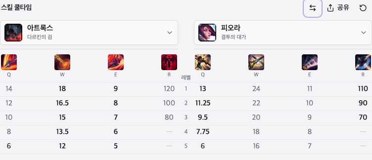
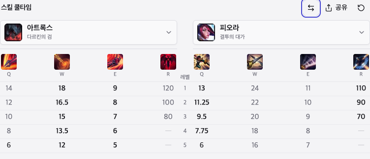
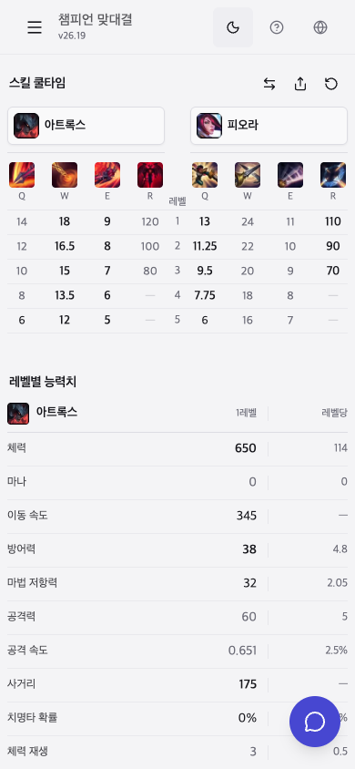
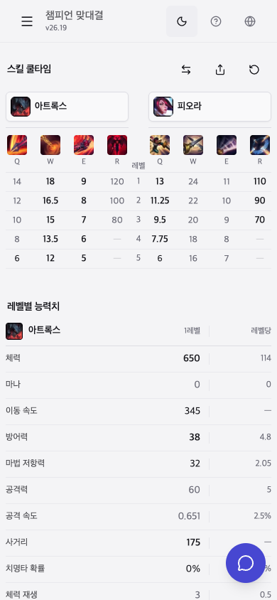
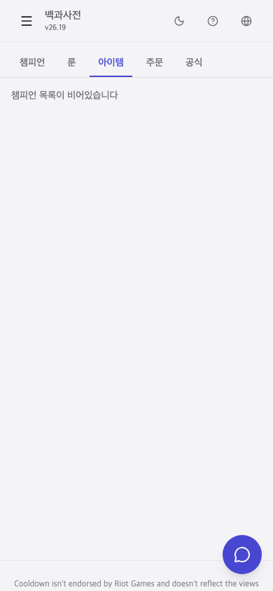
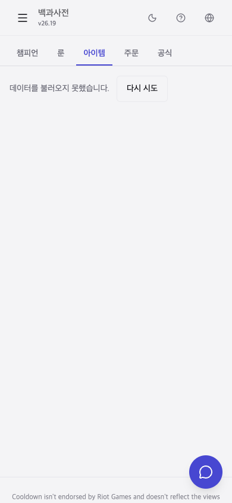

Cooldown · 로컬 검토 · 2026.10.06
화면 변경안 비교
앱에는 적용하지 않았습니다. 현재 앱을 직접 촬영한 화면과 브라우저에서만 바꿔 촬영한 초안을 비교하세요.
기존 색, 챔피언 이미지, 표 구성은 이어갑니다. 원하는 안을 고르면 아래에 요청 문구가 나옵니다.
B. 키보드 포커스를 선명하게
Tab으로 이동할 때만 나타나는 테두리를 같은 색의 불투명한 선으로 바꿉니다. 버튼 크기와 위치는 같습니다.
| 테마 | 현재 40% | 초안 100% |
|---|---|---|
| 라이트 | 1.89:1 | 6.19:1 |
| 다크 | 1.69:1 | 4.62:1 |


포커스 두께 2px 유지검증: 라이트·다크, 1440×900·390×844
C. 모바일에서 누르기 쉽게
VS 교체·공유·초기화는 32px에서 44px로, 팝업 닫기는 16px에서 44px로 넓힙니다. 아이콘은 16px 그대로입니다.


버튼 줄 높이가 12px 증가합니다.390px에서 가로 넘침 없음이 초안의 적용 범위: 768px 미만
D. 실패 이유와 다시 시도 표시
아이템 데이터 요청이 실패했을 때 빈 챔피언 목록으로 안내하는 대신, 기존 오류 문구와 다시 시도 버튼을 보여줍니다.


현재 화면은 검토용 브라우저에서 HTTP 503 실패를 재현해 촬영했습니다. 초안의 버튼은 배치와 문구 미리보기입니다. 실제 재요청 동작은 구현 전입니다.
선택:
선택 결과는 이 비교 페이지 안에서만 바뀝니다.